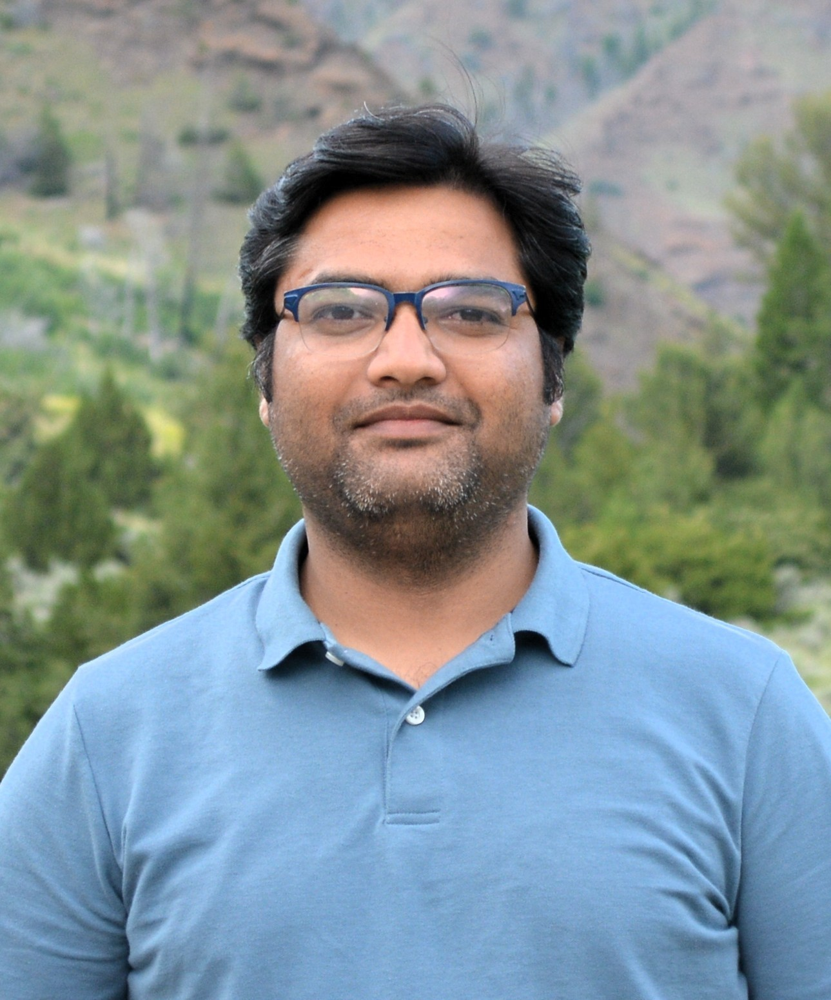

|  | Lokender Tiwari |
Chancellor's Gold Medal for Academic Excellence in B.Tech CSE (2008-2012)

|
| From left: Starting from me , Retd Chief Justice of Supreme Court of India , Late Justice J.S Verma , Governor of U.P , India B.L Joshi, Vice Chancellor of University, Prof. Sundar Lal |